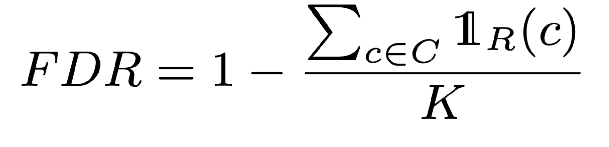
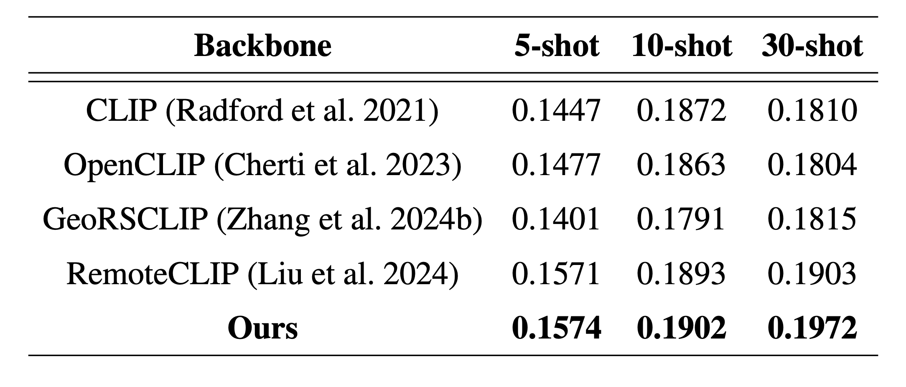

Vision language models have achieved impressive results across various fields. However, adoption in remote sensing remains limited, largely due to the scarcity of paired image-text data. To bridge this gap, synthetic caption generation has gained interest, traditionally relying on rule-based methods that use metadata or bounding boxes. While these approaches provide some description, they often lack the depth needed to capture complex wide-area scenes. Large language models (LLMs) offer a promising alternative for generating more descriptive captions, yet they can produce generic outputs and are prone to hallucination. In this paper, we propose a new method to enhance vision-language datasets for remote sensing by integrating maps as external data sources, enabling the generation of detailed, context-rich captions. Additionally, we present methods to measure and mitigate hallucinations in LLM-generated text. We introduce fMoW-mm, a multimodal dataset incorporating satellite imagery, maps, metadata, and text annotations. We demonstrate its effectiveness for automatic target recognition in few-shot settings, achieving superior performance compared to other vision-language remote sensing datasets.
The multimodal LLM-based curation process involves four main steps:
In our approach, hallucinations often occur when the LLM infers incorrect landmarks during caption generation. To quantify these hallucinations, we compute the false discovery rate (FDR), inspired by BLEU precision, which measures the proportion of false positives in the generated text. Unlike BLEU, which evaluates n-gram overlaps, we calculate precision over variable-length proper nouns and define FDR as 1-precision:
where C is the candidate list of size K, R is the reference list, and the indicator function counts the number of elements in C that are found in R. FDR reflects the proportion of false positives among all predicted positives, effectively quantifying the rate of hallucinations in the generated (candidate) captions. Low FDR scores are desirable.
We perform ablations to evaluate how components of our curation pipeline affect hallucination rates (FDR) and measure the percentage of uncertain words as a proxy for LLM uncertainty.
We continually pretrain the CLIP ViT-L/14 model using the fMoW-mm dataset. The model was continually trained for 50 epochs with a batch size of 125. We compare performance with vision-language baselines: CLIP, OpenCLIP, GeoRSCLIP, and RemoteCLIP.
We evaluate the learned visual representation on few-shot object detection based on OVDSAT, using the DIOR dataset, averaged over 5 splits. Our model demonstrates improved performance across all n-shots, showing its viability for data-scarce scenarios. Although the fMoW-mm dataset is much smaller than the datasets used for GeoRSCLIP (~5M) and RemoteCLIP (~150k), it achieves superior performance, highlighting the benefits of increased semantic density in the generated captions.
@misc{anderson2025measuringmitigatinghallucinationsvisionlanguage,
title={Measuring and Mitigating Hallucinations in Vision-Language Dataset Generation for Remote Sensing},
author={Madeline Anderson and Miriam Cha and William T. Freeman and J. Taylor Perron and Nathaniel Maidel and Kerri Cahoy},
year={2025},
eprint={2501.14905},
archivePrefix={arXiv},
primaryClass={cs.CV},
url={https://arxiv.org/abs/2501.14905}
}